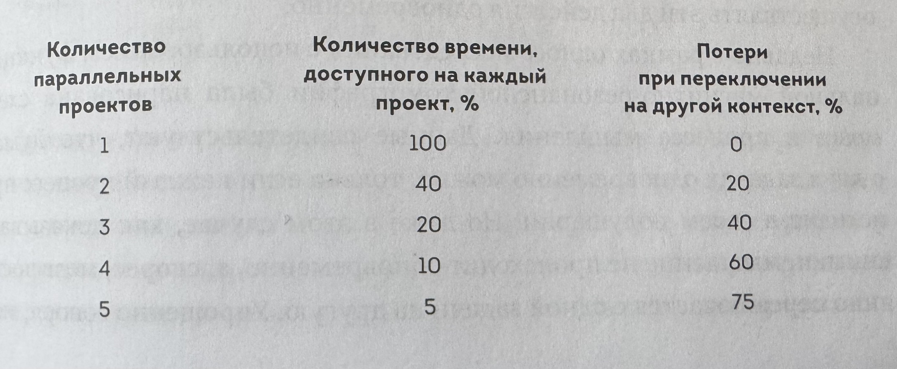
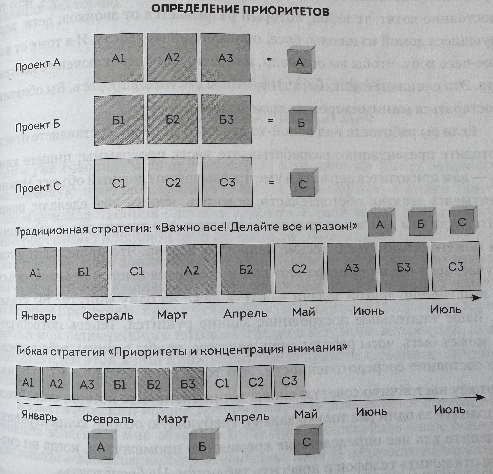
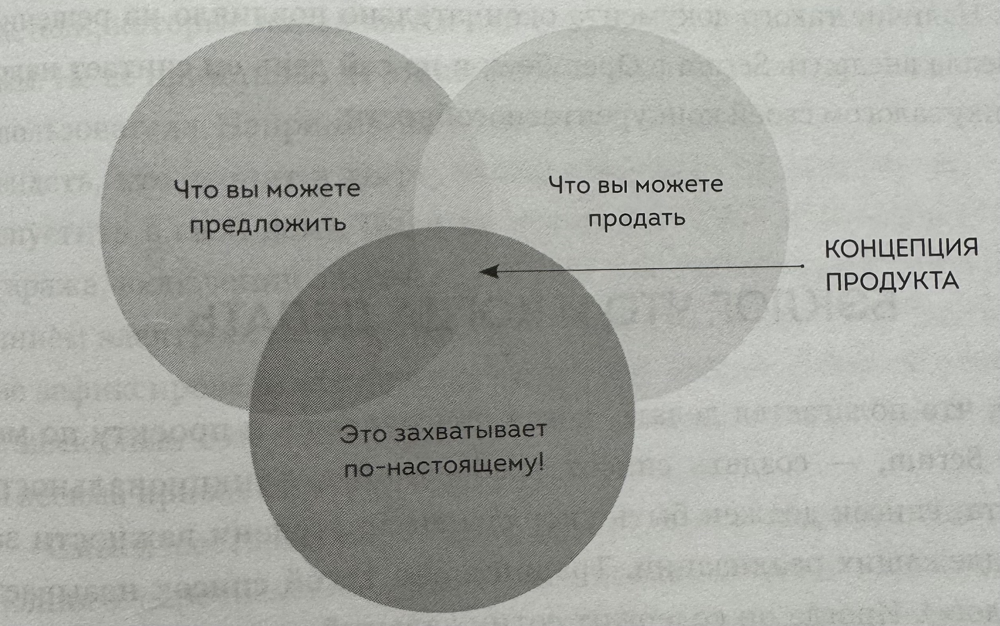
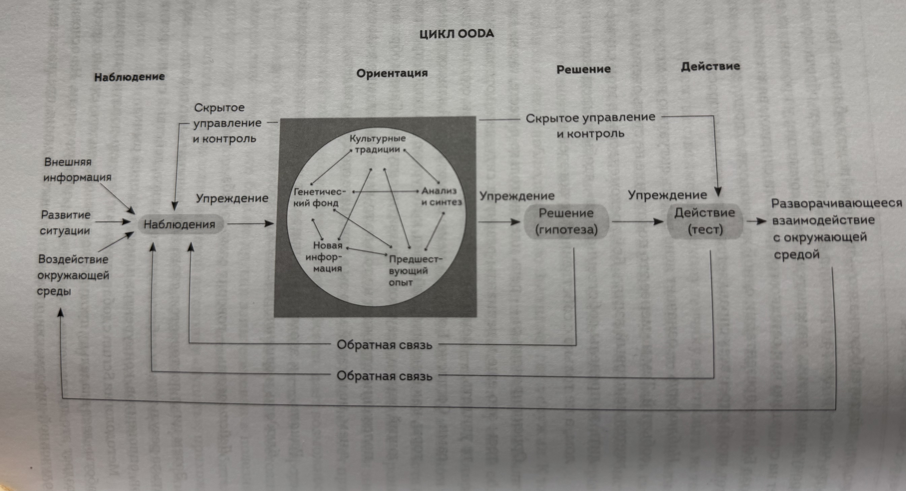
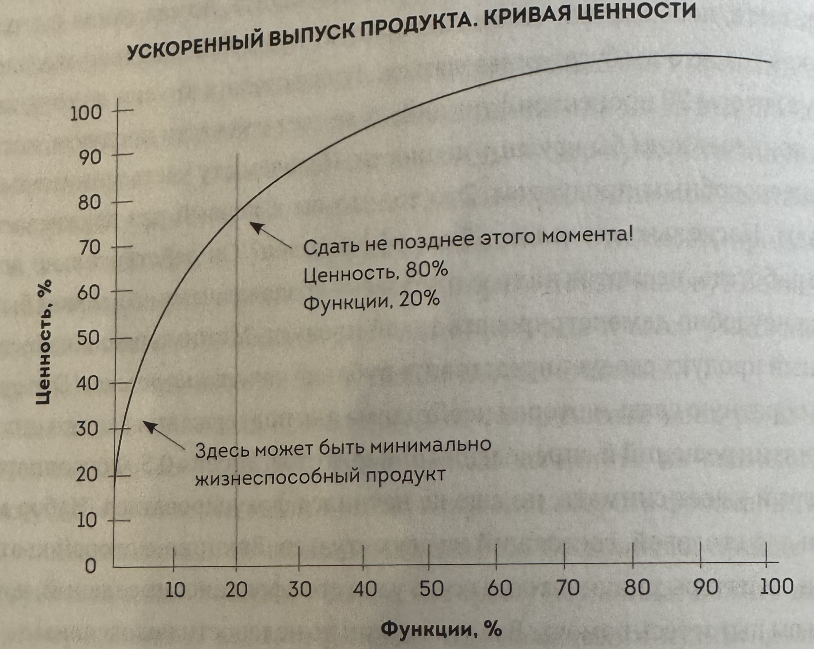
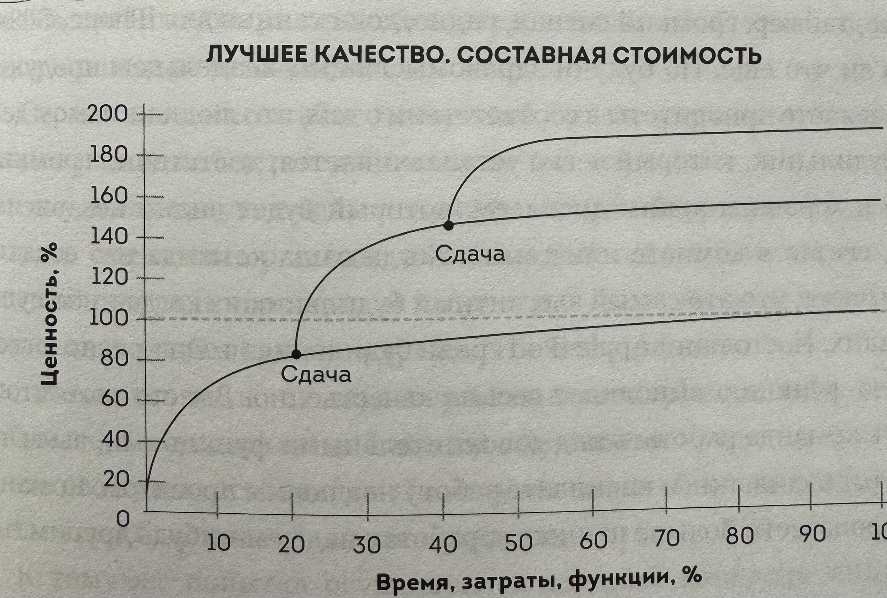

Links
Description
Поиск совершенства, у которого нет предела. В отличие от рядовых, у лучших команд есть понимание общей цели. Чтобы достичь ее, они не удовлетворяются стандартными решениями,а постоянно ищут неординарные варианты. Отказавшись быть посредственностью, они осознают свой потенциал, обладают высокой самооценкой и предъявляют абсолютные требования к собственным возможностям.
- Автономность. Лучшие команды являются самоорганизующи-мися и самоуправляемыми системами. Они умеют действовать самостоятельно и потому наделены правом как принимать собственные решения, так и реализовывать их.
- Многофункциональность. В лучшие команды входят специалисты по планированию, разработкам, производству, продажам и распространению, поэтому группы обладают всем необходи-мым, чтобы трудиться над проектом от первого до последнего этапа. В командах культивируется атмосфера взаимодействия, поддержки и понимания. Вот как описал такую обстановку участник проектной группы компании Fuji-Xerox, работавшей над принципиально новой моделью ксерокса: «Когда все члены команды находятся в одной большой комнате, то вам дана возможность без всяких усилий пользоваться знаниями и информацией, которыми владеют коллеги. Тогда вы начинаете мыслить совсем другими категориями. Вас волнует работа не только в том случае, когда она касается непосредственно ваших интересов, нет, вы думаете, что пойдет на пользу всей группе и общему делу — причем и в первую, и во вторую, и прочую очередь».
Руководитель отвечает за постановку стратегических целей, но решение, каким путем достигать этих целей, принимает команда.
Если вам нужно вычислить, как влияет размер группы, нужно взять число людей в ней, умножить его на «это число минус один» и разделить на два. Коммуникационные каналы = n (n - 1) / 2. Например, если в группе пять человек, то у вас десять каналов. Шесть человек — пятнадцать каналов. Семь человек — двадцать один канал. Восемь человек - двадцать восемь каналов. Девять человек - тридцать шесть каналов. Десять человек — сорок пять каналов. Наш мозг не в состоянии успевать за таким количеством людей. Мы не можем уследить, чем занимается каждый человек. Начинаем разбираться в этом — и теряем скорость работы. Каждый участник группы Scrum тоже должен знать, что делают все остальные. рабочем месте возникают не-доразумения, взаимное недопонимание и даже противоположные цели.
Совещания, раньше занимавшие несколько минут, теперь могут продолжаться часами.
Во-первых, абсолютная концентрация на достижении цели, которая создается, поддерживается, укрепляется и все более активизируется благодаря маорийскому ритуалу. Во-вторых, тесное взаимодействие, которое символизируют поднятые руки игроков, сплетенные вместе в движении к общей цели. В-третьих, стремление подавить противника - все, что встает на их пути, должно быть уничтожено. В-четвертых, всеобщее ликование, когда один из игроков прорывается с мячом вперед, — имя игрока не имеет значения, поводом для торжества служит сам факт прорыва.
Вините не игрока, а игру
Каждый из нас считает, будто только он умеет объективно реагировать на ситуацию, в то время как поведение остальных лишь мотивировано их персональными особенностями. Результат эксперимента, когда спрашивали про то почему человек принял то или иное решение и почему его принял его друг: как отвечал человек про себя «Химия — высокооплачиваемая сфера деятельности»; «Она очень теплый человек». Но когда речь зашла об их друзьях, они начали перебирать их способности, их потребности и прочие личные моменты: «Ему всегда легко давалась математика»; «Он довольно зависимый, и ему нужна женщина, которая брала бы ответственность на себя».
Мы являемся созданиями системы, в которую включены. Методика Scrum, принимая реальность, вместо того чтобы искать виноватых, пытается изучить систему, ставшую источником ошибки, и исправить ее.
Первый пример — автомобильный завод компании New United Motor Manufacturing, Inc. (NUMMI), расположенный в городе Фримонте, штат Калифорния. Это было совместное предприятие General Motors и Toyota. Завод был закрыт GM в 1982 году. Руководство считало его работников худшими в США. Люди не являлись на рабо-ту, пили на рабочих местах и постоянно намеренно портили машины (например, оставляли внутри двери банку из-под кока-колы, которая громыхала и мешала покупателям). Toyota вновь открыла завод в 1984 году. Компания GM предупредила, что рабочие завода ужас-ны, но управляющие отличные и их стоит нанять снова. Вместо этого Toyota не спешила приглашать на работу старое руководство, а вот рабочих вернула почти всех, некоторых даже отправила в Японию изучать производственную систему Toyota. Завод NUMMI практиче-ски сразу стал собирать автомобили с той же точностью и таким же низким уровнем брака, как и в Японии. Люди остались теми же - поменялась система.
Тайити Оно, выделяя три вида потерь, использовал японские терми-ны: мури (потери из-за неблагоразумного обращения с ресурсами); мура (потери из-за неравномерного обращения с ресурсами); муда (любые по-тери, связанные с производственным процессом). Эти идеи тесно связаны с циклом Деминга, о котором я писал ранее: планировать, действовать, проверять, корректировать. Планировать означает «избегать мури»; действовать означает «избегать мура»; проверять означает «избегать муда»; корректировать означает «воля, стимул и решимость воплотить все это». Я рассмотрю каждую из этих ступеней. Укажу, каких потерь следует избегать в первую очередь, - потерь, связанных с нанесением ущерба имуществу; потерь, вызванных неправильным выполнением задания с первого раза; потерь от чрезмерного усердия; эмоциональных потерь, связанных с завышенным ожиданием.
Люди стремятся быть многозадачными не потому, что это им хорошо удается. Они делают это из-за своего непредсказуемого темперамента. Они не в состоянии себя обуздать, так как у них проблемы с подавлением излишней импульсивности. Другими словами, люди, делающие много дел одновременно, в большинстве случаев просто не могут сосредоточить внимание на чем-то одном. Кстати, при таком импульсивном поведении они не в состоянии сами себе помочь.


- Многозадачность отупляет. Если делать одновременно несколько дел, получится и медленно, и плохо. Не поступайте так. Если вы считаете, что вас это не касается, то вы ошибаетесь - это относится и к вам.
- Сделанное наполовину - не сделано. Наполовину собранная машина от-бирает большое количество ваших ресурсов, которые могли бы быть использованы для создания ценности или экономии средств. Все, что не за-кончено, стоит денег и энергии, не принося никакой практической пользы.
- Делайте все правильно с первого раза. Совершив ошибку, исправляйте ее сразу. Отложите все другие дела и займитесь ею. Устранение дефекта спустя некоторое время займет в двадцать раз больше сил и часов, чем немедленное исправление ошибки.
- Если слишком усердно трудиться, работы становится больше. Если работать сверхурочно - это не значит, что успеешь больше. Слишком усердный труд приводит к усталости, которая в свою очередь приводит к браку в работе, и его приходится сразу устранять. Чем трудиться допоздна и еще по выходным, лучше работать в будни в постоянном ритме. И не забывать об отпуске.
- Не будьте неразумны. Амбициозные цели - лишь мотиваторы, которыми пользуются ваши руководители. Недостижимые цели только вызывают депрессию.
- Без героизма. Если для выполнения работы вам нужен герой - у вас проблема. Героическое усилие следует рассматривать как признак ошибки при планировании.
- Довольно с нас глупых концепций. Любая политика, кажущаяся сме-хотворной, с большой вероятностью таковой и является. Глупые фор-муляры, глупые совещания, глупые утверждения, глупые стандарты - все они просто глупы. Если ваш офис напоминает офис Дилберта, значит есть что исправлять.
- Никаких засранцев. Не будьте им сами и не позволяйте другим. Любой человек, создающий эмоциональный хаос, внушающий страх и ужас, унижающий людей, должен получить по заслугам. Его не должно быть в вашем коллективе.
- Попасть в поток. Выбирайте самый легкий, самый простой путь к выполнению всех задач. Scrum поможет вам попасть в такой поток.
Покер планирования Идея проста. Каждому участнику дается колода карт с числами Фибоначчи - 1, 2, 3, 5, 8, 13 и так далее. Каждая единица работы, которая должна быть оценена, выкладывается на стол. Затем каждый участник группы берет ту карту, число на которой, по его мнению, соответствует объему необходимых усилий, и кладет ее на стол рубашкой вверх. Затем все одновременно открывают карты. Если расхождение не больше чем на две карты (скажем, пятерка, две восьмерки и тринадцать), команда просто их складывает, берет среднее арифметическое (в данном случае 6,6) и переходит к следующей задаче. Помните, мы говорим об оценках, а не о жестких планах. И оценках небольших фрагментов проекта.
Никаких заданий. Нам нужны сценарии и факты. Таким образом, первое, о чем стоит задуматься, когда вы размышляете о смысле своего задания, - это действующее лицо. Покупатель, невеста, читатель, служащий — тот, оля кого вы будете выполнять данную задачу, чьими глазами вам придется смотреть на мир, когда приступите к созданию новой вещи, принятию конкретного решения, разработке программы.
Затем надо обратить внимание на то, что мы хотим сделать в первую очередь. Обычно это лишь часть работы, с которой мы начинаем наш процесс и на которой всегда можем его остановить, хотя по плану (или по списку) таких частей много и, конечно, мы должны следовать всему процессу.
Наконец, нужно подумать о мотивах. Почему выбранный нами персонаж хочет эту вещь? Как она будет ему служить, чем будет радовать его как потребителя? Определенно, этот момент оказывается ключевым. Личная заинтересованность придает колорит всему. Мой любимый пример связан с интернет-мемом, который был популярен несколько лет назад. Это картинка с изображением капитана Жана-Люка Пикара в знаменитом звездолете «Энтерпрайз» с подписью: «Как капитан космического корабля я хотел бы, чтобы в бортовом журнале автоматически использовалась сегодняшняя звездная дата..» Это высказывание приобретает некий смысл, только если задуматься. Вас никогда не удивляло, что в далеком будущем капитану космического корабля приходится в ручном режиме вводить дату, когда он заполняет бортовой журнал? «Дневник капитана. Звездная дата 4671.7. Планета Марс так хорошо смотрится с орбиты…» Даже нам не приходится делать так, когда мы оставляем запись у себя в блоге. Так почему же это делает он?
Но ключевой вопрос, который остается без ответа на этой картинке, - зачем? Зачем ему нужна такая функция? Для какой цели? Чтобы отслеживать порядок записей? Или что-то более серьезное? Должны ли эти записи исключать возможность внесения изменений в целях проверок и расследований криминалистами Звездного флота? Две совсем разные цели. Одна — бытовая, другая — имеет весьма вескую причину. Команде нужно разобраться, что капитан на самом деле хочет делать, при этом они могут найти совершенно иной подход к выполнению задачи, так что капитан будет получать гораздо более важную информацию, о которой он, возможно, даже и не задумывался, но которая была бы ему очень полезна.
Потребности разных персонажей, как правило, совсем разные. Представьте себе такой случай, когда ситуация меняется на противоположную. Предположим, вы произносите: «Мне нужна машина, чтобы ездить на работу». А теперь начните предложение так: «Как жителю пригорода, постоянно ездящему в центр на работу.. Или ровно наоборот: «Как фермеру Южной Дакоты с ее плохими дорогами…» В результате вы получите два совершенно разных представления об идеальном автомобиле.
Пользовательские сценарии
- Как потребителю мне удобно искать книги по жанрам, чтобы быстро найти те, которые я люблю читать.
- Как потребитель я, отбирая книги для покупки, хочу класть сразу каждую в корзину.
- Как менеджер продукта я хочу иметь возможность отслеживать покупки наших клиентов, чтобы быть в курсе, какие книги им можно предлагать. Они достаточно конкретны, чтобы быть выполнимыми, но не предписывают, каким образом следует действовать. Помните, группа решает самостоятельно, каким образом будет сделана работа, а что будет сделано, определяется ценностью самого проекта. Пакет пожеланий одного пользователя часто называют эпопеей или просто эпиком. В эпопее собрано все, что в целом несет в себе идею продукта — в нашем случае книжного интернет-магазина.
INVEST (Independent. Negotiable. Valuable. Estimable. Small. Testable).
- Завершенность, выполнимость, независимость (Independent). Сценарий должен быть: абсолютно завершенным; осуществимым на практике; независимым от других историй.
- Открытость (Negotiable). Сценарий до своего завершения должен быть открыт для общего обсуждения; любой участник группы должен иметь возможность внести в него свои поправки.
- Ценность (Valuable). Сценарий должен приносить реальную пользу и увеличивать ценность проекта для заказчиков, пользователей и любых заинтересованных лиц.
- Оценочность (Estimable). Сценарий должен быть удобен для оцен-ки объема работы.
- Лаконичность (Small). Сценарий должен быть кратким, компактно изложенным и конкретным, чтобы можно было просто и быстро планировать работы. Если сценарий получился слишком расплывчатым, перепишите его, а лучше разбейте на истории меньшего размера.
- Тестируемость (Testable). Сценарий должен пройти проверку на практике, чтобы считаться завершенным. Составьте заранее список критериев, которым должен соответствовать законченный сценарий. Сценарии должны быть тестируемы
Планирование спринта Все собираются вместе, просматривают список пользовательских сценариев, которые уже стоят в очереди на выполнение; выясняют, какое количество задач может взять на себя каждый участник группы; тщательно взвешивают, смогут ли они за этот спринт довести до полной готовности отобранные задания; смогут ли продемонстрировать заказчику сделан-ные единицы работ и показать ему готовые функции продукта; смогут ли сами себе в конце спринта сказать, что они со всем справились.
Нужно узнать динамику производительности После этого нужно определить самую важную в Scrum вещь - что мешает двигаться еще быстрее? Что мешает наращивать темп? Чтобы наращивать нужный темп - нудно прежде всего свести на нет все потери.
Счастье Обычно, если расспрашивать альпинистов про восхождение, они долго не распространяются о своих ощущениях на вершине. Они предпочтут говорить о морозе, сбитых в кровь ногах, плохой еде, паршивых условиях и сорвавшемся ледорубе. Но вы обязательно услышите, что после эйфории, которая охватывает их на вершине, наступает опусто-шенность (не считая случаев, когда они находятся в смертельной опас-ности). Они добились этого. Сверхчеловеческие усилия увенчались по-бедой. Но если вы спросите, какие моменты были самыми счастливыми, то услышите, что это минуты самых тяжелых испытаний, когда их тела, разум и дух оказывались на пределе своих возможностей. Именно тоз. они чувствовали сеоя счастливее всего, именно тогда испытали истинное упоение. И именно это они хотят пережить снова.
Нас награждают и хвалят не за то, что происходит с нами в пути, а лишь за успешное завершение путешествия. Общество вознагра-ждает нас за результаты, а не за сам процесс; за то, что мы достигли цели, а не за то, что мы прошли тот путь, который к ней ведет
Тем не менее в своей повседневной жизни мы все время находимся «в пути».
Люди счастливы не потому, что успешны. Они преуспевают, потому что счастливы. Счастье - это прогностический критерий, или, на языке программистов, «предсказы-вающая метрика». Человек мало-мальски начинает радоваться жизни - и уже добивается лучших результатов.
Чтобы ощутить радость собственного существования, совсем не нужно перекраивать свою жизнь немедленно и сверху донизу. Даже малая толика счастья заметно улучшит любые перспективы. Не ожидай-те, что счастье будет неослабно всеобъемлющим - таким, как в день свадьбы; просто обернитесь в сторону радости и каждый день станови-тесь немного счастливее. Разумеется, чем больше радости вы обретаете, тем сильнее ее воздействие на вашу жизнь. Моя цель сейчас - донести до вас простую мысль: даже небольшой шаг, сделанный вперед, может логия Scrum. Мы сооираем вокруг себя даже самые незначительные ме-лочи, создаем из них стройную систему, благодаря которой подводим фундамент нашей победы. Не беритесь за все сразу, справьтесь с одной вещью и сразу переходите к другой. Меняйте ситуацию методично, от фрагмента к фрагменту, — и вы действительно измените мир.
Точно так же, как мы распределяем работу на легко управляемые короткие циклы, а рабочее время разбиваем на небольшие промежутки, так и усовершенствование необходимо делить на фазы, чтобы на каждый отрезок времени приходилось по одной фазе улучшения. Понятие «непрерывное совершенствование» в японском языке передается словом кайдзен. Какие помехи можно устранить за один раз и таким образом добиться небольшого улучшения — и так, шаг за шагом, осуществлять идею непрерывного совершенствования?
В методологии Scrum этот вопрос рассматривают в конце каждого спринта во время ретроспективных собраний. Члены группы рассказы-вают о заданиях, выполненных за прошедший спринт, перемещают рас-смотренные задачи в колонку «Сделано» - теперь эти части программы можно продемонстрировать заказчику и выслушать его мнение, а потом приступают к обсуждению того, что получилось хорошо и что можно было бы сделать лучше в этом спринте. Далее они идентифицируют наиболее серьезную помеху и анализируют задачу по ее немедленному устранению в следующем спринте. Так решается проблема непрерывно-го совершенствования.
Чтобы собрание было действенным, потребуется создать атмосферу доверия и проявить необходимую эмоциональную зрелость. Главное, о чем нужно помнить, — вы никого не обличаете, а рассматриваете рабочий про-цесс. Почему что-то получилось так, а не иначе? Почему мы это упустили? Что помогло бы нам ускорить темпы?
Если вспомнить цикл Деминга «Планировать, действовать, проверять, корректировать», то очевидно, что ретроспективные собрания несут функцию проверки. Недостаточно лишь делиться мнениями, нужно приступать к непосредственной работе.
Вот как функционирует этот способ: в конце спринта каждый участник группы должен ответить на несколько вопросов.
- Оцените свою роль в компании по шкале от одного до пяти.
- Оцените компанию в целом по той же шкале.
- Почему вы так считаете.
- Назовите вещь, которая может сделать вас счастливее в следующем спринте.
Всего четыре вопроса, решаемых буквально за несколько минут.
Приоритеты

Product Owner должен отстоять собственную точку зрения, привлечь на свою сторону не только высшее руководство, но и исполнителей, убедительно доказывая, что предложенный им путь — лучший и единственно верный.
Таким образом получилось, что скрам-мастер несет ответственность за ту часть проекта, которая отвечает на вопрос как делать, а владелец продукта - за ту часть, которая отвечает на вопрос что делать.
Нужен человек, который бы осуществлял бы нашу взаимосвязь с клиентом - это также Product Owner. Предполагается, что после каждого спринта он будет обеспечивать группу информацией о критических замечаниях, пожеланиях и настроениях клиента. Половину своего рабочего времени владелец продукта должен посвящать встречам с теми, кто собирается приобретать продукт, рассказывать, как продвигается его разработка; узнавать, от-нечают ли их ожиданиям последние внесенные изменения и довольны ли они его новыми возможностями.
Скрам-мастер и команда отвечают за то, каков будет темп их труда и как быстро они закончат проект. Владелец продукта ответствен за то, чтобы резуль. тативная командная работа превратилась в результат, приносящий прибыль.
- Владелец продукта должен обладать всей полнотой знаний о том, что входит в круг его обязанностей. Подразумевается следующее: во-первых, он должен быть абсолютно компетентен во всем, что делается в процессе разработки, и уметь оценивать возможности команды — то есть с чем она справляет-ся, а с чем не очень; во-вторых, довольно хорошо разбираться в сути продукта и понимать, как довести разработку проекта - а это может быть и компьютерная система ФБР, и метод обучения учащихся средних школ — до результата, имеющего действительную стоимость. Кроме того, владелец продукта должен великолепно знать рынок, чтобы уметь анализировать его со-стояние: какая продукция имеет значение сегодня и как может измениться ситуация завтра.
- Владелец продукта должен быть наделен полномочиями для принятия решений. Дирекции компании не следует вмеши- о ваться в действия владельца продукта (как она не вмешивается Фр в действия и решения группы). Напротив, руководителям, отве-чающим за проект, полагается оказывать ему всяческое содей-ствие, когда он трудится над концепцией продукта и когда в процессе разработки выполняет свои обязанности, помогая команде добиваться нужной цели. Помощь со стороны управленческого аппарата — весьма ценный фактор, поскольку владелец продук та испытывает давление со стороны многочисленных заинтересованных групп, как внутренних, так и внешних. Перед лицом такого мощного натиска он не мог бы сдерживать удар без административной поддержки. Надо добавить, что владелец продукта несет ответственность за результат, отбирает и формулирует для команды все требования на текущий спринт, при этом он не вправе давать задания отдельным участникам и вмешиваться в решения команды.
- Владелец продукта должен быть всегда доступен для команды, поскольку в любой момент может потребоваться его обьяснение, почему то или иное задание нужно делать в первую очередь. По сути, владелец продукта несет полную ответственность за ведение беклога, по этой причине необходим налаженный обмен мнениями между ним и командой. Бывает так, что участники группы в силу своего опыта и квалификации советуют владельцу продукта, какие требования наиболее важны в данный момент. Владелец продукта должен быть надежным, последовательным и доступным. Не имея возможности связаться с ним, команда может принять неверное решение. Участники группы целиком полагаются на владельца продукта: на его концепцию продукта и знание ситуации на рынке. Поэтому нужна постоянная взаимосвязь владельца продукта и команды, иначе весь рабочий процесс может развалиться. Кстати, это одна из причин, почему я редко рекомендую на роль владельца продукта руководящих работников, например СЕО компаний, — у них просто нет столько времени посвящать себя нуждам команды.
- Владелец продукта должен нести ответственность за полезность продукта. Если речь идет о бизнес-структуре, в рамках которой работает скрам-команда, — значит показателем полезности является прибыль. Таким образом, деятельность самого владельца продукта соответственно оценивается из расчета, сколько прибыли приносит один выполненный пункт из его списка требований. Например, когда команда за неделю справляется с сорока пунктами, я всегда требую, чтобы обязательно измеряли, сколько конкретно прибыли приносит каждое выполненное требование. Однако скрам-команды работают в самых разных областях деятельности, и необязательно это должна быть бизнес-среда. Поэтому критерием полезности может быть, например, объем удачно завершенных дел. Мне известна следственно-оперативная группа из правоохранительных органов, измеряющая принесенную обществу пользу количеством осуществленных за неделю арестов находящихся в розыске преступников. Я знаю несколько церковных приходов, применяющих методологию Scrum, которые выбрали собственное мерило ценности: они измеряют популярность среди людей с помощью подсчета своей паствы и контроля ее роста. Смысл в том, что каждая команда — над чем бы она ни работала — должна сама для себя определить критерии полезности и спрашивать результат с владельца продукта, поскольку именно он в ответе за то, чтобы ценность и стоимость продукта постоянно росли.
Постулируемый в системе Scrum принцип прозрачности дает возможность легко отслеживать такого рода показатели.

Довольно трудно представить, как можно осуществлять пошаговые выпуски продукта или проекта, которые, казалось бы, не имеют ни стоимости, ни ценности, пока не будут закончены. Например, как реализовать пошаговый выпуск автомобиля или стомиллионного проекта по разработке компьютерной игры? Смысл в том, чтобы посмотреть, какие части продукта или проекта действительно будут содержать какую-то пользу для клиента - достаточную для того, чтобы он смог высказать свои мнения, а владелец продукта мог сразу отреагировать на них.
Рассмотрим, например, процесс производства автомобиля. Toyota потратила на разработку модели Prius от составления концепции проекта до выпуска первого готового образца пятнадцать месяцев — быстрее, чем им когда-либо удавалось раньше. Многофункциональная команда, разрабатывавшая и собиравшая Prius, не занималась продажей автомобиля до того, как он был готов, но Toyota быстро начала изготавливать прототипы новой модели, чтобы главный инженер мог приглядеться к ней и понять, в правильном ли направлении работает команда. Такое быстрое создание прототипов — полностью функциональных автомобилей до официального выпуска модели, а затем многократное улучшение этих прототипов до тех пор, пока не получится тот продукт, который вы хотите продавать покупателю, - может приводить к невероятно быстрым изменениям. Суть не в том, чтобы с самого начала иметь полностью утвержденный дизайн, скорее, делается функциональный прототип, чтобы можно было увидеть, что следует изменить. А затем, усовершенствовав продукт, сделаете следующий прототип и улучшите его. Чем раньше вы получите реальную обратную связь о качестве своего продукта, тем быстрее вы сделаете лучшую машину.

Не концентрируетесь на том, чтобы осуществить весь список задач - все подряд, нужное и ненужное, - лучше уделите максимум внимания самому ценному, что действительно нужно людям.

Составьте список всех функций, которые вы хотите получить. Например, вы создаете новый танк и хотите, чтобы он двигался со скоростью 120 километров в час, давал десять залпов в минуту, в нем должно быть четыре посадочных места, кондиционер и многое другое. Разработчик смотрит на это описание и говорит, что сделать такой двигатель — это сто баллов, заряжающий механизм - пятьдесят баллов, посадочные места — пять баллов и так далее по всему списку. В конце каждой функции будет присвоено некоторое количество баллов. И потом после каждого спринта клиент, который при таком сценарии по контракту обязан тесно сотрудничать с владельцем продукта, может полностью менять свои приоритеты. Любой объект, любая функция в бэклоге могут быть передвинуты куда угодно. А новые функции? Никаких проблем: просто выбрасываем из списка другую функцию, оцененную в аналогичное количество баллов. Теперь хотите систему с лазерным наведением? Это будет пятьдесят баллов работы — чтобы компенсировать данную прибавку, давайте откажем-ся от маловажных функций из нижней части бэклога общей суммой на пятьдесят баллов.
Некоторые компании вывели на новый уровень эту идею создания для клиента только высокоприоритетных функций. Пару лет назад я услышал о компании-разработчике, применявшей Scrum, которая получила контракт по разработке программного обеспечения для крупной строительной компании на десять миллионов долларов. Стороны договорились о временных рамках в двадцать месяцев. Однако компания добавила в контракт примечание, гласившее: «Если строительная фирма захочет приостановить контракт в любой момент — а по договору она имела на это право, — в таком случае ей нужно будет выплатить лишь 20 процентов от остающейся стоимости контракта. То есть если программное обеспечение работало так, как нужно заказчику, он мог в любой момент остановить работу скрам-команды. Разработчики начали спринты длиной в один месяц. После первого месяца клиент перенаправил часть усилий разработчика, чтобы получить большую ценность. Во второй месяц ситуация повторилась. После третьего месяца клиент приостановил контракт, внедрил программное обеспечение и начал с ним работать. Они получили ту ценность, которая была им нужна.
Давайте посчитаем, чтобы увидеть, кто остался в выигрыше. На самом деле и заказчик, и исполнитель. За первые три месяца контракта клиент заплатил команде полтора миллиона долларов. Приостановив контракт раньше времени, он обязан был выплатить 20 процентов от остававшихся 8,5 миллиона — это 1,7 миллиона. Заказчик заплатил 3,2 миллиона долларов за программное обеспечение, которое, по его ожиданиям, должно было обойтись в десять миллионов долларов, а исполнитель получил свои деньги на семь месяцев раньше.
И они были не единственными, кто остался в выигрыше: компания взялась за проект с ожидаемой маржей прибыли в 15 процентов.
Поэтому за первые три месяца на разработку они потратили 1,3 миллиона долларов. Но в результате получили 3,2 миллиона долларов. Их маржа прибыли выросла с 15 до 60 процентов. То есть увеличение дохода на 400 процентов. К тому же теперь, когда разработчики освободились, они могут браться за новые проекты. Это не просто хороший бизнес. Это стратегия раннего выхода на пенсию.
ЧТО НУЖНО СДЕЛАТЬ ЗАВТРА Составьте концепцию своего продукта и начните разбивать на мелкие составляющие задания, которые вам предстоит выполнить. Не нужно делать сразу все — достаточно подготовить список задач на одну неделю. Пока члены вашей команды проводят ежедневные стендап-митинги и первые спринты, вы сможете за это время составить довольно объемный бэклог, чтобы было чем занять команду на несколько спринтов вперед. Не забывайте почаще в него заглядывать, потому что команда начнет ускорять темп и будет выполнять больший объем работ, чем вы планировали в самом начале.
Затем как владелец продукта составьте предположительный план действий: как, на ваш взгляд, будут развиваться события? Что вы можете осуществить за этот квартал? Где вы хотите оказаться к концу года?
Важно помнить, что это всего лишь стоп-кадр, так что не стоит слишком увлекаться планированием, просто набросайте варианты./Вы не составляете договор, обязательный к исполнению, а просто записываете собственные мысли, чего вам удастся достичь через какое-то время.
Поверьте, картина изменится. Возможно, даже радикальным образом.
Смысл такого планирования в том, чтобы создать прозрачность всех действий коллектива. Если у вас есть группа по продажам, она должна знать, над какими функциями продукта вы работаете, чтобы начать заниматься его продвижением на рынке. Руководству нужно иметь представление о том, откуда будет поступать прибыль, а также сколько ее будет и когда. Основная идея заключается в том, чтобы все делалось открыто. Любой человек может в любой момент посмотреть, на каком этапе находится работа над продуктом. Все могут наблюдать, как пользовательские истории перемещаются по скрам-доске в сторону столбца «Сделано». Участники группы иногда переносят истории на диаграммы, где одна шкала обозначает время, другая — баллы, — это так называемые диаграммы выгорания задач.
ВНЕДРЯЕМ SCRUM. С ЧЕГО НАЧАТЬ
- Выберите владельца продукта. Это человек, обладающий видением того, что вы собираетесь делать, производить, достигать. Он принимает во внимание риски и выгоды, что нужно выполнить, что может быть сделано и что вас воодушевит. Глава 8. «Приоритеты»
- Выберите команду. Кто те люди, которым предстоит выполнить работу? Специалисты, входящие в группу, должны обладать всеми навыками и знаниями, необходимыми, чтобы воплотить идею владельца продукта в жизнь. Команда должна быть небольшой, от трех до девяти человек — это золотой стандарт Scrum. Глава 3. «Команды»
- Выберите скрам-мастера.Это человек, который отвечаетза скрам-процессы, обучает им команду и помогает устранять мешающие ей препятствия. Глава 5. «Потери — это преступление»
- Создайте бэклог продукта. Это список абсолютно всех требований, предъявляемых к продукту и расставленных по их приоритету. Беклог существует и развивается на протяжении всей жизни продукта, чьим ориентиром он является. Бэклог продукта - единственная и однозначная концепция «всего, что команда в принципе может сделать, в порядке приоритетности». Существует только один бэклог продукта. Это означает, что владелец продукта должен принимать решения о приоритетности на основе всего спектра задач. Владелец продукта должен беседовать со всеми заинтересованными лицами и командой, чтобы гарантировать всю полноту обратной связи и отображать в бэклоге все требования и пожелания потребителя. Глава 8. «Приоритеты»
- Уточните и оцените бэклог продукта. Крайне важно, чтобы участники группы, которые будут выполнять задания из бэклога, оценили, сколько усилий это потребует. Команда должна взглянуть на каждую задачу и определить, выполнима ли она в принципе. Достаточно ли информации, чтобы выполнить задачу? Достаточно ли она обозрима, чтобы ее можно было оценить? Есть ли общее пони-мание, каким стандартам и критериям она должна соответствовать, чтобы быть выполненной? Создается ли при этом действительная ценность? Каждая задача должна быть видна, продемонстрирована заказчику и, возможно, запушена в использование. Не оценивайте задания бэклога в часах, поскольку люди плохо с этим справляются. Оценивайте в относительных размерах: «малый», «средний», •большой». Лучше использовать последовательность Фибоначчи и присваивать каждой задаче количество баллов: 1, 2, 3, 5, 8, 13, 21. Глава б. «Планируйте реальность, а не пустую мечту»
- Планирование спринта. Это первое скрам-собрание. Команда, скрам-мастер и владелец продукта планируют спринт. Спринты всегда имеют фиксированную продолжительность, которая должна быть меньше месяца. Как правило, выбирают спринты длиной в одну или две недели. Команда смотрит в верхнюю часть бэклога и прогнозирует количество заданий, которое возможно выполнить за этот спринт. Если команда уже прошла пару спринтов, ей следует учитывать то число баллов, которое было в прошлом спринте. Количество баллов мы называем Динамикой производительности. Скрам-мастер и команда должны в каждом спринте наращивать динамику. Планирование спринта — это еще одна возможность для владельца продукта и команды удостовериться, что все точно пони-мают, как реализация заданий служит воплощению замысла. На этой встрече все должны договориться о цели спринта и опре-делить, что должны выполнить за спринт. Основное правило Scrum — если команда договорилась об определенном количестве заданий, которые нужно выполнить за один спринт, то добавлять новые уже нельзя. Команда должна быть в состоянии работать автономно на протяжении всего спринта и завершить то, что пообещала заказчику сделать. Глава 6. «Планируйте реальность, а не пустую мечту»
- Работа должна быть видимой. Прозрачность всех действий и процессов обеспечивает скорейшее достижение цели. Наиболее распространенный способ добиться этого - завести скрам-доску с колонками: «Нужно сделать, или бэклог»; «В работе»; «Сделано». Стикеры — это задачи, которые нужно реализовать; по мере того как они выполняются, команда перемещает стике-ры из одной колонки в другую.Еще один способ сделать работу видимой — создать диаграмму сгорания задач. На одной оси - количество баллов, которое команда взяла в этом спринте, на другой - количество дней. Каждый день скрам-мастер подсчитывает количество баллов за выполненные задачи и отражает это на графике. В идеале к концу спринта должен быть резкий спад до нуля.Глава 7. «Счастье»
- Ежедневный стендап-митинг или ежедневный SCRUM. Это пульс всего процесса Scrum. Каждый день в одно и то же время не более чем на пятнадцать минут команда и скрам-мастер встречаются и дают ответы на три вопроса.
- Что ты делал вчера, чтобы помочь команде завершить спринт?
- Что ты будешь делать сегодня, чтобы помочь команде завершить спринт?
- Какие препятствия встают на пути к достижению цели спринта? Вот и все. Вся встреча. Если на это требуется больше пятнадцати минут, значит вы что-то делаете неправильно. Суть таких встреч в том, чтобы вся команда точно знала, какое задание на каком этапе находится в текущем спринте. Все ли задачи будут выполнены в срок? Есть ли возможность помочь другим членам команды преодолеть препятствия? Никто не распределяет заданий сверху — команда самостоятельна и все решает сама. Никто не пишет подробных отчетов руководству. Скрам-мастер отвечает за устранение помех, мешающих команде продвигаться вперед. Глава 4. «Время» Глава 6. «Планируйте реальность, а не пустую мечту»
- Обзор спринта. Это встреча, на которой команда рассказывает, что сделано за спринт, и демонстрирует готовые части продукта. Присутствуют владелец продукта, скрам-мастер, команда и любые заинтересованные лица: заказчик, представители ру-ководства, потенциальные потребители. Это открытая встреча, где команда демонстрирует, что удалось переместить в колонку «Сделано» за время спринта. Демонстрировать команда должна только то, что соответствует критериям выполненности или завершенности. Что полностью и окончательно готово. Это может быть полностью выполненный продукт или его отдельная готовая функция. Глава 4. «Время»
- Ретроспектива спринта. После того как команда показала, что она сделала за прошедший спринт и что может быть сдано клиенту для получения обратной связи, все садятся за общий стол и обсуждают ряд вопросов. Что прошло хорошо? Что можно было сделать лучше? Что можно сделать лучше в следующем спринте? Какое улучшение команда может внедрить в процесс немедленно? Чтобы собрание было действенным, потребуется создать атмосферу доверия и проявить необходимую эмоциональную зрелость. Главное, о чем нужно помнить, — вы никого не обличаете, а рассматриваете рабочий процесс. Почему это случилось? Почему мы это упустили? Что могло бы ускорить ход работ? Особенно важно, что люди ощущают себя командой и берут на себя ответственность за все процессы и их результаты. Решения ищут всей командой. Участники группы должны обладать определенной психологической выдержкой, чтобы их обсуждения были направлены на решение злободневной проблемы, а не на поиски виноватых. Абсолютно недопустимо, чтобы даже один член команды вынужден был занимать оборонительную позицию, - все в группе должны слышать и понимать друг друга. К концу встречи команда и скрам-мастер должны договориться о совершенствовании процесса, которое будет введено в действие в следующем спринте. Совершенствование, которое называют кайдзен, должно быть внесено в бэклог для следующего спринта, включая приемочные тесты. Благодаря скрам-доске и тестированию команда сможет понять, действительно ли они внедрили совершенствование и как оно сказалось на динамике производительности. Глава 7. «Счастье»
- Немедленно начинайте следующий спринт, учитывая как возникшие препятствия, так и результаты непрерывного совершенствования.
Глава 1 - Привычное мироустройство дает трещину
- Планировать полезно. Слепо следовать плану - глупо. Невероятно заманчиво, когда работа, которую предстоит выполнить по крупному проекту, детально изображена графически на бесчисленных диаграммах и представлена на всеобщее обозрение. Но как только этот превосходно отточенный план сталкивается с реальностью, он сразу рассыпается в прах. Внедрите в ваш метод работы возможность изме-нений, открытий и новых идей.
- Проверять и адаптироваться. Регулярно наблюдайте за ходом работ и последовательно выясняйте: справляетесь ли вы с заданием, можете ли вы выполнять его лучше и интенсивнее.
- Измениться или умереть. Если вы будете цепляться за старые принципы распоряжений, надзора и жесткого планирования, это приведет вас к провалу. Тем временем готовые к переменам конкуренты вырвутся вперед
- Обнаружить ошибку как можно раньше и быстро ее устранить. Формальная сторона дела: ведение документации, процедуры и сове-щания - занимает более прочное место в корпоративной культуре, чем создание реального продукта, который должен регулярно, на каждом витке работы, тестироваться пользователями. Производство продукта, не имеющего подлинной ценности, - настоящее безумие. Разработка. ведущаяся короткими циклами, позволяет быстро наладить взаимосвязь с пользователем и незамедлительно избавляться от всего, что действительно мешает рабочему процессу.
Глава 2 - Историк и рождленя SCRUM
- Сомнение смерти подобно. Наблюдать, ориентироваться, решать. действовать. Определите, где вы находитесь, осознайте имеющиеся варианты, сделайте выбор и действуйте!
- Искать ответы вокруг себя. Сложные адаптивные системы следуют нескольким простым правилам, ориентируясь на окружающую среду.
- Великие коллективы. Многофункциональные, автономные, свободные в принятии решений команды с установкой на совершенствование своих возможностей.
- Не гадать. Планировать, действовать, проверять, корректировать. Планируйте то, что собираетесь выполнить. Сделайте. Проверьте, соответствует ли это тому, что вы хотели. Корректируйте на основании выявленных ошибок и изменяйте методы работы. Повторяйте цикл регулярно и добивайтесь непрерывного улучшения системы.
- Сюхари. Осваивайте приемы, движения и правила. Овладев ими, придумывайте свои приемы и движения. Добившись высокого мастерства. откажитесь от правил и просто будьте. Когда все выученное усвоено. решения принимаются автоматически.
Глава 3 - Команды
- **Нажимать на правильные рычаги**. Меняйте производительность команды. Это даст гораздо больший эффект - больший на несколько порядков, - чем продуктивность отдельных сотрудников.
- Преодолевать границы возможностей. Великие команды стремятся к цели, которая намного больше, чем устремления отдельной личности: выиграть Кубок НБА или стать лучшей ротой, чтобы удостоиться чести маршировать на похоронах генерала Макартура.
- Автономность. Дайте команде свободу принимать самостоятельные решения, возможность действовать по собственному усмотрению - уважайте высочайших профессионалов. Суть в способности работать не по стандартным схемам в любой ситуации - и неважно, идет ли речь об организации сбыта или о репортажах из революционного Каира
- Многофункциональность. Команда должна иметь такой набор специалистов, которые обладают всеми навыками, необходимыми для завершения проекта, какая бы ни была поставлена задача - разработать программное обеспечение для сервиса фирмы Salesforce.com или захватить террористов в Ираке.
- Побеждать малым количеством. Малочисленные команды работают быстрее, чем многочисленные. Правило номер один - семь участников плюс-минус два. Довольствуйтесь малым.
- Обвинять глупо. Не ищите дурных людей, ищите вредные системы - системы, которые стимулируют ненадлежащее поведение и вознагра-ждают за плохую работу.
Глава 4 - Время
- Время конечно. Обращайтесь с ним бережно. Разбейте вашу работу на части, которые могут быть выполнены за равные, жесткие и корот-ние промежутки времени, лучше - от одной недели до четырех недель И если вы уже подхватили вирус Scrum, называйте эти промежутки спринтами.
- **Демонстрируйте или умрите**. В конце каждого спринта у вас должно быть что-то сделано - что-то, что можно использовать (чтобы летать ездить, вычислять).
- **Выкиньте свои визитки**. Должности и звания - это лишь ярлычки вашего статуса. Пусть вас знают за то, что вы делаете, а как к вам будут обращаться - не суть важно.
- Все всё знают. Информационная насыщенность ускоряет работу.
- По собранию в день. Что касается командных встреч, одного раза в день будет достаточно. Собирайтесь все вместе ежедневно на пятнадцать минут. Смотрите, что можно предпринять для увеличения скорости и качества, - и делайте это.
Глава 5 - Потери - это преступление
- **Многозадачность отупляет**. Если делать одновременно несколько дел. получится и медленно, и плохо. Не поступайте так. Если вы считаете, что вас это не касается, то вы ошибаетесь - это относится и к вам.
- Сделанное наполовину - не сделано. Наполовину собранная машина от-бирает большое количество ваших ресурсов, которые могли бы быть использованы для создания ценности или экономии средств. Все, что не закончено, стоит денег и энергии, не принося никакой практической пользы.
- Делайте все правильно с первого раза. Совершив ошибку, исправляйте ее сразу. Отложите все другие дела и займитесь ею. Устранение дефекта спустя некоторое время займет в двадцать раз больше сил и часов, чем немедленное исправление ошибки
- Если слишком усердно трудиться, работы становится больше. Если работать сверхурочно - это не значит, что успеешь больше. Слишком усердный труд приводит к усталости, которая в свою очередь приводит к браку в работе, и его приходится сразу устранять. Чем трудиться допоздна и еще по выходным, лучше работать в будни в постоянном ритме. И не забывать об отпуске.
- Не будьте неразумны. Амбициозные цели - лишь мотиваторы, которыми пользуются ваши руководители. Недостижимые цели только вызывают депрессию.
- Без героизма. Если для выполнения работы вам нужен герой - у вас проблема. Героическое усилие следует рассматривать как признак ошибки при планировании.
- Довольно с нас глупых концепций. Любая политика, кажущаяся сме-хотворной, с большой вероятностью таковой и является. Глупые фор-муляры, глупые совещания, глупые утверждения, глупые стандарты - все они просто глупы. Если ваш офис напоминает офис Дилберта, значит есть что исправлять.
- Никаких засранцев. Не будьте им сами и не позволяйте другим. Любой человек, создающий эмоциональный хаос, внушающий страх и ужас. унижающий людей, должен получить по заслугам. Его не должно быть в вашем коллективе.
- **Попасть в поток**. Выбирайте самый легкий, самый простой путь к выполнению всех задач. Scrum поможет вам попасть в такой поток.
Глава 6 Планируйте реальность, а не пустую мечту
- Карта - еще не живая местность. Не обольщайтесь своим планом. Почти наверняка он неверен.
- Планируйте только то, что нужно. Не пытайтесь предусмотреть все на многие годы вперед. Планируйте ровно столько, сколько нужно, чтобы ваши команды были всегда заняты.
- Какая это собака? Не оценивайте в абсолютном выражении, например в часах. - уже не раз доказано, что люди не умеют этого делать.
- Оценивайте относительно, например в собако-единицах или по размеру футболок (S. M. L. XL. XXL), либо - что самое надежное - используйте последовательность Фибоначчи.
- Спросите у оракула. Используйте анонимный метод, вроде дельфийского, чтобы не подвергнуться влиянию чужого мнения; избегайте эффекта ореола, эффекта стадности и группового мышления.
- **Планируйте с помощью покера**. Используйте покер планирования. чтобы быстро оценить работу, которую нужно сделать.
- Работа - это сценарии. Сначала подумайте о человеке, который получит пользу от той вещи, которую вы делаете: потом подумайте о том. что это такое и, наконец, зачем им это нужно. Люди мыслят сюжетами и фактами, так дайте им их сценарий. Как Х, я хочу Y, для того, чтобы Z.
- Узнайте свою динамику. Каждая команда должна точно знать, сколько работы она может выполнить за один спринт. Она должна знать, насколько может повысить динамику производительности, работая разумнее и устраняя все, что встает на пути и тормозит ее работу.
- Динамика х время = результат. Узнав, насколько быстро вы продвига-етесь, вы сможете понять, когда окажетесь на финише.
- Ставьте перед собой стратегические цели. С методикой Scrum не слишком трудно удвоить производительность и в два раза приблизить время сдачи проекта. Если вы сделаете это вовремя, ваши доходы и стоимость акций удвоятся.
Глава 7 - Счастье
- Это путешествие, а не пункт назначения. Истинное счастье можно найти в пути, а не в его завершении. Мы обычно награждаем только за результаты, но, что больше всего нужно укреплять в людях - их стремление к величию.
- Счастье - хит сезона. Счастье помогает вам принимать лучшие ре-шения. Когда вы счастливы, вы становитесь созидателями, не бегаете из компании в компанию и наверняка сделаете намного больше того, чем сами рассчитывали.
- Измерить счастье. Просто быть счастливым недостаточно. Нужно измерить чувство счастья и полученный результат сопоставить с результатами вашей деятельности. Все традиционные показатели берутся из прошлого. Счастье - это показатель, который всегда смотрит в бу-дущее.
- Становитесь лучше каждый день - и измеряйте улучшения. В конце каждого спринта команда должна выбрать маленькое улучшение, или кайдзен, которое сделает их счастливее. Это должно стать самой важ-ной вещью, которой они добьются в следующем спринте.
- Секретность - яд. Ничто не может держаться в тайне. Все должны знать всё, включая финансовые данные. Запутывание следов нужно только тем, кто ищет собственной выгоды.
- Работа должна быть прозрачной. Сделайте доску, которая будет пока-зывать, какую работу нужно выполнить, над чем вы сейчас работаете и что уже сделано. Ее должны видеть все и все должны обновлять информацию на ней.
- Счастье - это независимость, мастерство и целеустремленность. Каждый человек хочет управлять своей судьбой, совершенствоваться в том, что делает, и служить большой цели.
- Заставьте «пузырь счастья» лопнуть. Не становитесь счастливыми до такой степени, чтобы начать верить в придуманную вами же чепуху. Всегда измеряйте счастье результатами деятельности, и если заметите нестыковки, будьте готовы вмешаться. Удовлетворенность и самона-деянность - враги успеха
Глава 8 - Приориететы
- Составьте список. Проверьте его дважды. Составьте список всех за-даний, которые в принципе можно было бы сделать в рамках проекта.Затем расставьте акценты. Поставьте вверху списка задачи с наивысшей ценностью и наименьшим риском.
- Владелец продукта превращает идею проекта в бэклог. Должен уметь осмыслять продукт, рынок и клиента.
- Лидер не босс. Владелец продукта решает, что должно быть сделано и почему. Каким образом достичь этого и кто будет это делать - команда решает сама.
- Владелец продукта - профессионал с огромным опытом, может принимать окончательные решения. Всегда доступен для команды и готов отвечать на вопросы. Ответствен за получение ценности.
- Наблюдать, ориентироваться, решать, действовать (OODA). Вы должны видеть всю стратегическую картину, однако действовать тактически и быстро.
- Страх, неуверенность и сомнения. Лучше давать, чем получать. Проникните внутрь цикла принятия решений вашим конкурентом.
- **Получайте деньги ни за что и вносите изменения бесплатно**. Создавайте новое только в том случае, если оно имеет ценность.Будьте готовы поменять его на то, что требует такого же усилия. То, что казалось вам нужным в самом начале, никогда не бывает тем, что вам нужно на самом деле.
Глава 9 - Изменить Мир
- Scrum ускоряет темп всех начинаний человека. Неважно, в чем суть проекта или проблемы, - методика Scrum может быть использована в любом начинании, чтобы повысить производительность и добиться лучших результатов.
- Scrum для школ. В Голландии все больше учителей средних общеоб-разовательных школ применяют Scrum. Результаты экзаменационных оценок повышаются более чем на десять процентов. К методике Scrum можно привлекать всех учеников - с разным уровнем подготовки. с разными характерами и талантами, с разными жизненными устрем-лениями.
- **Scrum против бедности**. В Уганде фонд «Грамин» использует Scrum. чтобы донести до фермеров информацию, необходимую им, чтобы вырваться из нищеты. Результат - у беднейших людей планеты вдвое увеличиваются урожаи и появляются первые доходы.
- Порвите свои визитки. Избавьтесь от званий и титулов, от руководителей и иерархических структур. Дайте людям свободу делать то, что они считают правильным, и возможность нести за это ответственность. Результаты вас поразят.
Backlinks
TABLE without id
file.outlinks AS "OUTGOING",
file.inlinks AS "BACKLINKS"
WHERE file.name = this.file.name